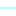

<!doctype html>
<html lang="en">
    <head>
        <meta charset="utf-8">
        <meta http-equiv="X-UA-Compatible" content="IE=edge">
        <meta name="viewport" content="initial-scale=1,user-scalable=no,maximum-scale=1,width=device-width">
        <meta name="mobile-web-app-capable" content="yes">
        <meta name="apple-mobile-web-app-capable" content="yes">
        <link rel="stylesheet" href="css/leaflet.css"><link rel="stylesheet" href="css/L.Control.Locate.min.css">
        <link rel="stylesheet" href="css/qgis2web.css"><link rel="stylesheet" href="css/fontawesome-all.min.css">
        <link rel="stylesheet" href="css/leaflet-control-geocoder.Geocoder.css">
        <link rel="stylesheet" href="css/leaflet-measure.css">
        <style>
        html, body, #map {
            width: 100%;
            height: 100%;
            padding: 0;
            margin: 0;
        }
        </style>
        <title>WebGIS SDA Ciamis</title>
    </head>
    <body>
        <div id="map">
        </div>
        <script src="js/qgis2web_expressions.js"></script>
        <script src="js/leaflet.js"></script><script src="js/L.Control.Locate.min.js"></script>
        <script src="js/leaflet.rotatedMarker.js"></script>
        <script src="js/leaflet.pattern.js"></script>
        <script src="js/leaflet-hash.js"></script>
        <script src="js/Autolinker.min.js"></script>
        <script src="js/rbush.min.js"></script>
        <script src="js/labelgun.min.js"></script>
        <script src="js/labels.js"></script>
        <script src="js/leaflet-control-geocoder.Geocoder.js"></script>
        <script src="js/leaflet-measure.js"></script>
        <script src="data/BatasKabupaten_1.js"></script>
        <script src="data/Sawah_2.js"></script>
        <script src="data/Sungai_3.js"></script>
        <script>
        var map = L.map('map', {
            zoomControl:true, maxZoom:28, minZoom:1
        }).fitBounds([[-7.587761328520762,108.04628433591452],[-7.038496321139693,108.84413586308538]]);
        var hash = new L.Hash(map);
        map.attributionControl.setPrefix('<a href="https://github.com/tomchadwin/qgis2web" target="_blank">qgis2web</a> &middot; <a href="https://leafletjs.com" title="A JS library for interactive maps">Leaflet</a> &middot; <a href="https://qgis.org">QGIS</a>');
        var autolinker = new Autolinker({truncate: {length: 30, location: 'smart'}});
        function removeEmptyRowsFromPopupContent(content, feature) {
         var tempDiv = document.createElement('div');
         tempDiv.innerHTML = content;
         var rows = tempDiv.querySelectorAll('tr');
         for (var i = 0; i < rows.length; i++) {
             var td = rows[i].querySelector('td.visible-with-data');
             var key = td ? td.id : '';
             if (td && td.classList.contains('visible-with-data') && feature.properties[key] == null) {
                 rows[i].parentNode.removeChild(rows[i]);
             }
         }
         return tempDiv.innerHTML;
        }
        L.control.locate({locateOptions: {maxZoom: 19}}).addTo(map);
        var measureControl = new L.Control.Measure({
            position: 'topleft',
            primaryLengthUnit: 'meters',
            secondaryLengthUnit: 'kilometers',
            primaryAreaUnit: 'sqmeters',
            secondaryAreaUnit: 'hectares'
        });
        measureControl.addTo(map);
        document.getElementsByClassName('leaflet-control-measure-toggle')[0]
        .innerHTML = '';
        document.getElementsByClassName('leaflet-control-measure-toggle')[0]
        .className += ' fas fa-ruler';
        var bounds_group = new L.featureGroup([]);
        function setBounds() {
        }
        map.createPane('pane_GoogleSatelliteHybrid_0');
        map.getPane('pane_GoogleSatelliteHybrid_0').style.zIndex = 400;
        var layer_GoogleSatelliteHybrid_0 = L.tileLayer('https://mt1.google.com/vt/lyrs=y&x={x}&y={y}&z={z}', {
            pane: 'pane_GoogleSatelliteHybrid_0',
            opacity: 1.0,
            attribution: '',
            minZoom: 1,
            maxZoom: 28,
            minNativeZoom: 0,
            maxNativeZoom: 19
        });
        layer_GoogleSatelliteHybrid_0;
        map.addLayer(layer_GoogleSatelliteHybrid_0);
        function pop_BatasKabupaten_1(feature, layer) {
            var popupContent = '<table>\
                    <tr>\
                        <th scope="row">luas</th>\
                        <td class="visible-with-data" id="luas">' + (feature.properties['luas'] !== null ? autolinker.link(feature.properties['luas'].toLocaleString()) : '') + '</td>\
                    </tr>\
                </table>';
            layer.bindPopup(popupContent, {maxHeight: 400});
            var popup = layer.getPopup();
            var content = popup.getContent();
            var updatedContent = removeEmptyRowsFromPopupContent(content, feature);
            popup.setContent(updatedContent);
        }

        function style_BatasKabupaten_1_0() {
            return {
                pane: 'pane_BatasKabupaten_1',
                opacity: 1,
                color: 'rgba(0,0,0,1.0)',
                dashArray: '',
                lineCap: 'square',
                lineJoin: 'bevel',
                weight: 1.0,
                fillOpacity: 0,
                interactive: true,
            }
        }
        map.createPane('pane_BatasKabupaten_1');
        map.getPane('pane_BatasKabupaten_1').style.zIndex = 401;
        map.getPane('pane_BatasKabupaten_1').style['mix-blend-mode'] = 'normal';
        var layer_BatasKabupaten_1 = new L.geoJson(json_BatasKabupaten_1, {
            attribution: '',
            interactive: true,
            dataVar: 'json_BatasKabupaten_1',
            layerName: 'layer_BatasKabupaten_1',
            pane: 'pane_BatasKabupaten_1',
            onEachFeature: pop_BatasKabupaten_1,
            style: style_BatasKabupaten_1_0,
        });
        bounds_group.addLayer(layer_BatasKabupaten_1);
        map.addLayer(layer_BatasKabupaten_1);
        function pop_Sawah_2(feature, layer) {
            var popupContent = '<table>\
                    <tr>\
                        <th scope="row">Nm_Inf</th>\
                        <td class="visible-with-data" id="Nm_Inf">' + (feature.properties['Nm_Inf'] !== null ? autolinker.link(feature.properties['Nm_Inf'].toLocaleString()) : '') + '</td>\
                    </tr>\
                    <tr>\
                        <th scope="row">Luas_Fung</th>\
                        <td class="visible-with-data" id="Luas_Fung">' + (feature.properties['Luas_Fung'] !== null ? autolinker.link(feature.properties['Luas_Fung'].toLocaleString()) : '') + '</td>\
                    </tr>\
                </table>';
            layer.bindPopup(popupContent, {maxHeight: 400});
            var popup = layer.getPopup();
            var content = popup.getContent();
            var updatedContent = removeEmptyRowsFromPopupContent(content, feature);
            popup.setContent(updatedContent);
        }

        function style_Sawah_2_0() {
            return {
                pane: 'pane_Sawah_2',
                stroke: false, 
                fill: true,
                fillOpacity: 1,
                fillColor: 'rgba(100,200,100,1.0)',
                interactive: true,
            }
        }
        map.createPane('pane_Sawah_2');
        map.getPane('pane_Sawah_2').style.zIndex = 402;
        map.getPane('pane_Sawah_2').style['mix-blend-mode'] = 'normal';
        var layer_Sawah_2 = new L.geoJson(json_Sawah_2, {
            attribution: '',
            interactive: true,
            dataVar: 'json_Sawah_2',
            layerName: 'layer_Sawah_2',
            pane: 'pane_Sawah_2',
            onEachFeature: pop_Sawah_2,
            style: style_Sawah_2_0,
        });
        bounds_group.addLayer(layer_Sawah_2);
        map.addLayer(layer_Sawah_2);
        function pop_Sungai_3(feature, layer) {
            var popupContent = '<table>\
                    <tr>\
                        <th scope="row">NAMOBJ</th>\
                        <td class="visible-with-data" id="NAMOBJ">' + (feature.properties['NAMOBJ'] !== null ? autolinker.link(feature.properties['NAMOBJ'].toLocaleString()) : '') + '</td>\
                    </tr>\
                    <tr>\
                        <th scope="row">Orde</th>\
                        <td class="visible-with-data" id="Orde">' + (feature.properties['Orde'] !== null ? autolinker.link(feature.properties['Orde'].toLocaleString()) : '') + '</td>\
                    </tr>\
                    <tr>\
                        <th scope="row">panjang_km</th>\
                        <td class="visible-with-data" id="panjang_km">' + (feature.properties['panjang_km'] !== null ? autolinker.link(feature.properties['panjang_km'].toLocaleString()) : '') + '</td>\
                    </tr>\
                </table>';
            layer.bindPopup(popupContent, {maxHeight: 400});
            var popup = layer.getPopup();
            var content = popup.getContent();
            var updatedContent = removeEmptyRowsFromPopupContent(content, feature);
            popup.setContent(updatedContent);
        }

        function style_Sungai_3_0() {
            return {
                pane: 'pane_Sungai_3',
                opacity: 1,
                color: 'rgba(0,255,255,1.0)',
                dashArray: '',
                lineCap: 'butt',
                lineJoin: 'round',
                weight: 2.0,
                fillOpacity: 0,
                interactive: true,
            }
        }
        map.createPane('pane_Sungai_3');
        map.getPane('pane_Sungai_3').style.zIndex = 403;
        map.getPane('pane_Sungai_3').style['mix-blend-mode'] = 'normal';
        var layer_Sungai_3 = new L.geoJson(json_Sungai_3, {
            attribution: '',
            interactive: true,
            dataVar: 'json_Sungai_3',
            layerName: 'layer_Sungai_3',
            pane: 'pane_Sungai_3',
            onEachFeature: pop_Sungai_3,
            style: style_Sungai_3_0,
        });
        bounds_group.addLayer(layer_Sungai_3);
        map.addLayer(layer_Sungai_3);
            var title = new L.Control();
            title.onAdd = function (map) {
                this._div = L.DomUtil.create('div', 'info');
                this.update();
                return this._div;
            };
            title.update = function () {
                this._div.innerHTML = '<h2>WebGIS SDA Ciamis</h2>';
            };
            title.addTo(map);
        var osmGeocoder = new L.Control.Geocoder({
            collapsed: true,
            position: 'topleft',
            text: 'Search',
            title: 'Testing'
        }).addTo(map);
        document.getElementsByClassName('leaflet-control-geocoder-icon')[0]
        .className += ' fa fa-search';
        document.getElementsByClassName('leaflet-control-geocoder-icon')[0]
        .title += 'Search for a place';
        var baseMaps = {};
        L.control.layers(baseMaps,{' Sungai': layer_Sungai_3,' Sawah': layer_Sawah_2,' Batas Kabupaten': layer_BatasKabupaten_1,"Google Satellite Hybrid": layer_GoogleSatelliteHybrid_0,}).addTo(map);
        setBounds();
        </script>
    </body>
</html>
